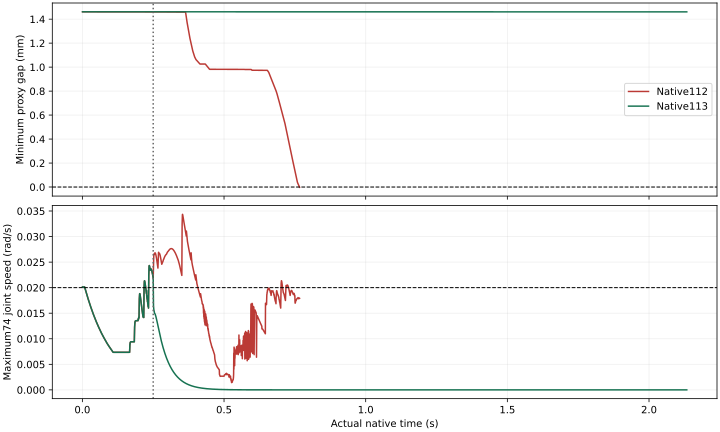

← 主面板实际状态防护与原生制动
SafeDuo 开发诊断 · 2026-10-12 · 实验配置：2 FR3/F2 + 2 UR5/DFX。学习 System0 关闭，正式留出0。
该已知场景的保护性制动通过；任意长时间、大范围运动仍未验收。保护版本在没有合格候选时触发全电机制动，原生仿真继续运行。保护性停机单独计分；本轮四臂实际运动门槛和真实抓取完整任务均未通过。
7920新增实际原生子步
0.301s制动到连续停稳确认
030/120/600秒物理随机完成
0新增训练与合格完整任务
执行错误与修复
旧分支返回“没有合格候选”后仍继续执行一个平滑目标。1920Hz对照112从第15控制周期开始出现该状态，随后最小代理间隙在0.766667秒变为负值。113在第15周期锁存紧急制动，每个物理子步用当前实际关节位置作为原50电机控制器的目标；没有写回关节位置、速度或物体状态，仿真继续推进。
112与113使用同一初态、同一随机臂指令及FIFO6，前480个原生子步的全部原字段逐值相同。原电机控制器、模型、限位、速度、力和位置/速度联动门槛保持一致。紧急制动明确覆盖普通命令的速率限制。
本轮随机输入仍只有26个臂关节；24个独立手指电机参与制动，没有随机手指输入。单一场景的制动结果不能作为通用制动包络、遥操或硬件安全证明。
全部新对照与失败
111启动时钟绑定失败，实际执行0个受控物理步，外层退出1、子进程退出0；不计物理试验或安全成功。112是修复时钟绑定后的执行复本，原失败保留。脚本退出0与安全门槛通过分开记录。
同条件制动对照与停稳

虚线标出制动触发时间；停稳要求全部74个实际关节速度连续0.3秒≤0.02 rad/s。原始速度及间隙逐物理子步审计。q与qd原关系容差均为10⁻⁴，最小代理间隙必须≥0。
制动后实际位移、停稳确认时刻及全部原门槛见独立停稳记录。这条曲线仅说明本次已知场景，不表示随机运动已充分覆盖。
原生四视角视频
每个版本包含俯视、正视、侧视和全景。视频保留实际帧时间，没有合成抓取动作；原生帧与编码时间最大偏差小于1.1微秒。
慢放只改变观看速度，实验时长以原生记录为准。这里展示短时修复和停止；大范围动作及完整抓取任务尚未取得通过证据。
长时间随机输入准备与物理执行
已生成50维（26臂+24手指）连续输入：10种运动过程 × 30/120/600秒 × 每层2个独立开发种子，共60条、900060个请求样本、15000秒请求时长。种子和时钟贯穿整条轨迹，不靠拼接或每块重置。
逐周期独立IID在所有50个电机原关节范围上的请求跨度超过99%。突发微振荡的跨度较小，单独记录；其余过程也按各自分布记账。这些数值是指令支持，不是已执行运动范围或安全率。
分布、范围、时间连续性与每条输入SHA。下一步须验证含手指运动的预测几何与制动包络、持续原生记录，再执行长时间多场景随机压力测试；仅把手停住无法满足运动覆盖。
联合验收与训练准入
九项联合要求全部未完成。真实摩擦夹持的闭合、抬起、搬运、放置、释放与退离需形成合格完整任务；附着或姿态写入不计入任务数据。当前没有合格的新任务样本，不启动新学习System0训练。
- 回退保持在原始非零速度和延迟下持续安全：未联合验收
- 保留操作意图并有实际四臂运动：未联合验收
- 强随机、大范围操作空间与定向危害覆盖：未联合验收
- 科学规范的冻结协议、独立多种子、留出与不确定性报告：未联合验收
- 物体位置、姿态、大小、速度、可达性进入明确规划与安全输入：未联合验收
- 真实物理夹持、抬升、搬运、放置和释放：未联合验收
- 真实四臂共同任务且有安全与不安全的同输入对照：未联合验收
- 完整原生观测和独立危害判据，无漏测或单看画面：未联合验收
- 网页可审阅的安全对照、完整视角和证据归档：未联合验收
可复核数据
原始分包含原生q/qd、全部9021代理间隙、接触、质量矩阵、实际提交目标、时钟和原始PNG。代理间隙审计不等于完整碰撞网格认证。